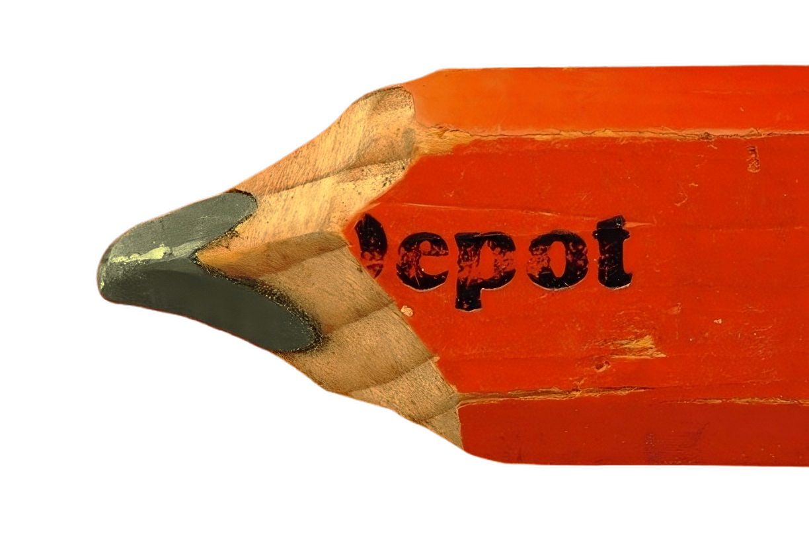

Ik wilde leren hoe ik beter rekening kan houden met verschillende perspectieven en waarden in een ontwerp. Ook wilde ik mijn vaardigheden verbeteren in het ontdekken en onderzoeken van behoeften en het toepassen van deze inzichten in mijn ontwerpen.
WAT IK WILDE LEREN
.png)
WAT HEB IK GELEERD
Ik heb geleerd hoe belangrijk het is om stakeholders actief te betrekken via enquêtes en interviews. Daarnaast heb ik inzicht gekregen in hoe waarden en normen invloed hebben op ontwerpbeslissingen, en hoe de VSD-methode helpt bij het creëren van ethische en waardevolle ontwerpen.
THEORIE
VSD (Value Sensitive Design): Waarden van verschillende stakeholders te bepalen.
Waardenhiërarchie: Waarden → Normen → Design requirements.
Critical Making: Het vergelijken van twee verschillende ontwerpen met tegengestelde waarden om keuzes te verkennen.
Value Matrix Conflicts: Het identificeren en aanpakken van conflicten tussen waarden.
Gebruikersinzichten: Antwoorden van de enquêtes/interviews
Concept Evaluatie: Waarden en Design Requirements koppelen
Mijn team en ik gebruikten enquêtes en interviews om behoeften en perspectieven te verzamelen van studenten. Verder maakten we gebruik van VSD om de waarden van ons team te onderbouwen bij het maken van design requirements. Bij Critical Making creëerden we twee ontwerpen die elk op andere waarden focusten. In ons geval ging het om de waarden Toegankelijkheid en Kwaliteit. Dit hielp ons bij het begrijpen van conflicten en beïnvloedde de focus van ons team. Hierdoor kwam er nog een extra waarde naar voren in ons team: Balans.
METHODEN
BEROEPSPRODUCTEN
Ontwerpen maken gebaseerd op inzichten uit interviews, waardenhiërarchie en door de Critical Making-methode.
ONTWIKKEL
GESPREK
Ik heb geleerd dat elk klein aspect van iemands leven invloed kan hebben op hun keuzes en waarden. Daarom is het belangrijk om dieper te gaan bij het onderzoeken van je doelgroep en alles te bekijken vanuit verschillende waarden en perspectieven.

BEREIKT
Naast alles theoretisch geleerd en met een goede team geoefend, hier staan foto’s van mijn ontwerpen, waarin duidelijk wordt hoe ik de behoeften en waarden van stakeholders heb verwerkt.
TROTS?
Ik ben trots op mijn vermogen om de theorie te vertalen naar praktische ontwerpen en op mijn doorzettingsvermogen bij het zoeken naar balans tussen conflicterende waarden en dieper ingaan op de wensen en perspectief van de doelgroep.
BETROKKEN
AANPAK